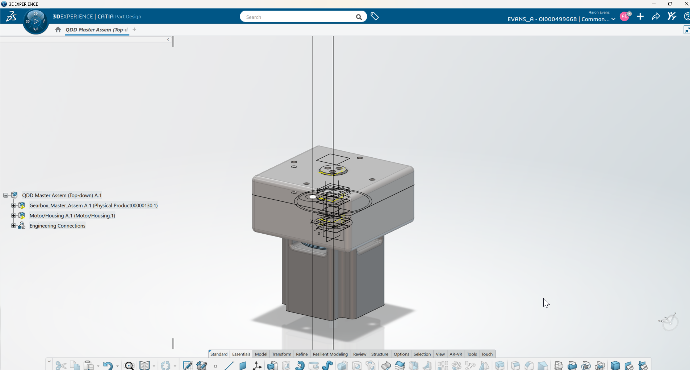
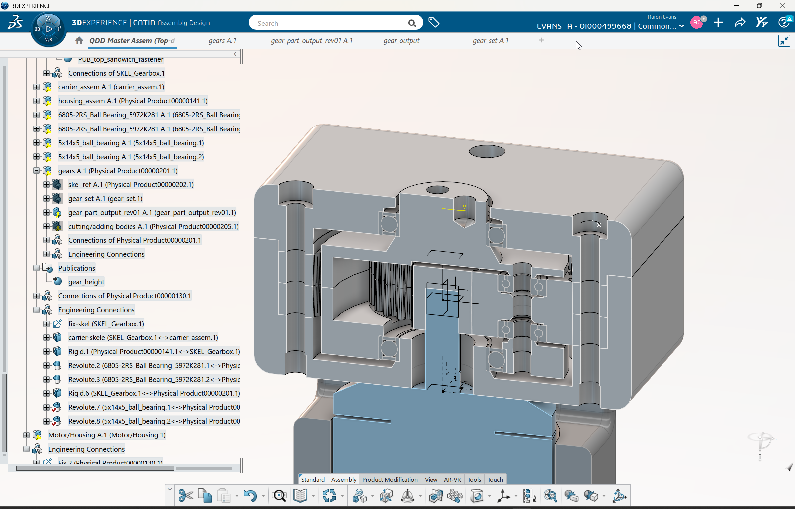
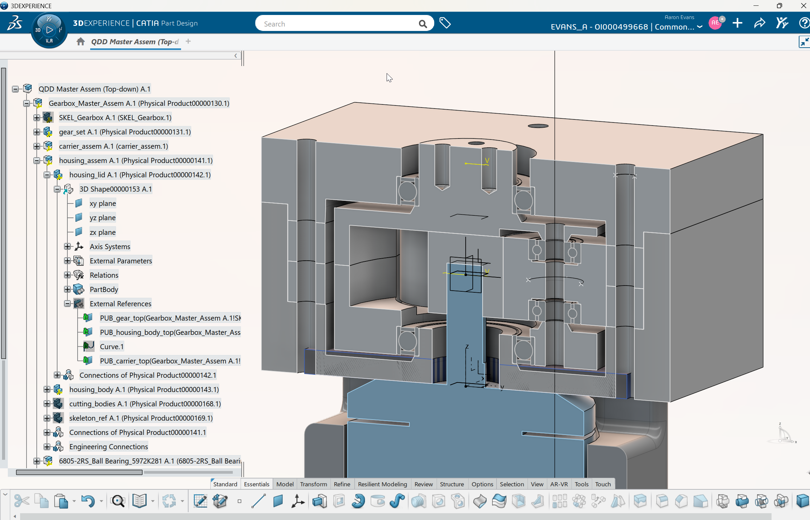

REV 00B — IN PROGRESS






1 / 6
Full assembly cross-section
Featured Project
QDD Gearbox Actuator
A backdrivable 5:1 planetary gearbox, 3D-printed and designed from scratch for robotic actuators.
5:1Ratio
16 NmPeak
≤0.5°Backlash
<$120Budget
>90%Efficiency
FDMMfg
Design→
CAD→
Calibration→
Rev 00A→
Rev 00B — Mar 2026→
GD&T→
Controls
+ expand
Design Decision
Gear Type — Decision Matrix
+ expand
Manufacturing
FDM Calibration Results
| Interface | Offset | Status |
|---|---|---|
| Main bearing bore | +0.10 | Validated |
| Lid bearing bore | +0.10 | Validated |
| Carrier bore | +0.10 | Applied |
| Planet bore | +0.15 | Pending |
| Ring-to-housing | +0.30 | Applied |
+ expand
Validation
Rev 00A Test Results
5
Tests Run
4
Changes
1
Passed
Gear mesh notchy → spur gears
Lid over-constraining → decouple
Carrier shoulder deform → reprint
Carrier indexing OK no change
Bolt torque binding → redesign
+ expand
Context
Why This Project
Three years into a mech eng degree without designing a complete electromechanical system or touching CATIA. Built the kind of actuator used in Optimus and modern legged robots to close that gap.
+ expand
CAD
Skeleton-Driven CATIA V6
1
Skeleton
0
Inter-part refs
60-80
Hrs self-taught
Single skeleton drives all parts. Change one parameter, whole assembly updates.
+ expand
Prototype
Rev 00A Build & Fit Check
| Interface | Result | Action |
|---|---|---|
| Housing bearing | Slightly loose | Offset adjusted |
| Lid-to-bearing | Good fit | No change |
| Planet bearings | 1 of 3 loose | Tolerance review |
| M3 motor holes | 0.13mm tight | Bore enlarged |
| Sun gear bore | Needed pressing | +0.025mm |